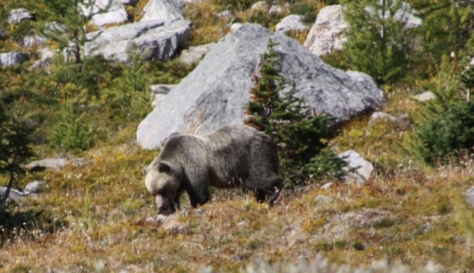
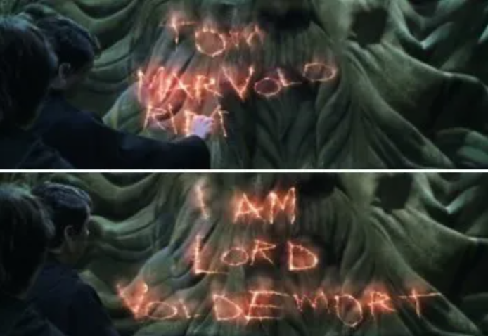
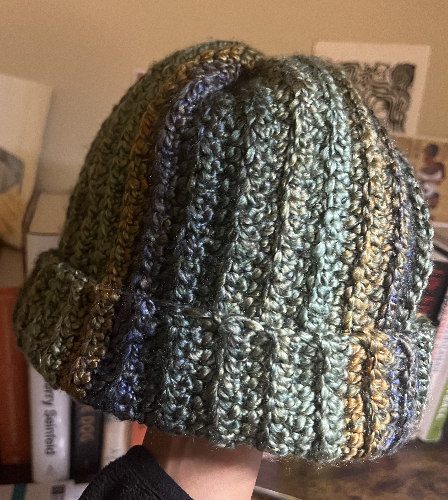
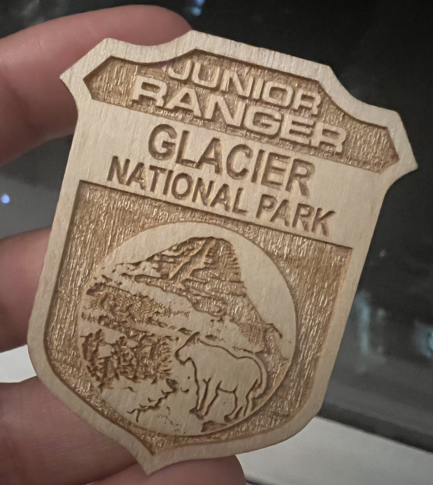
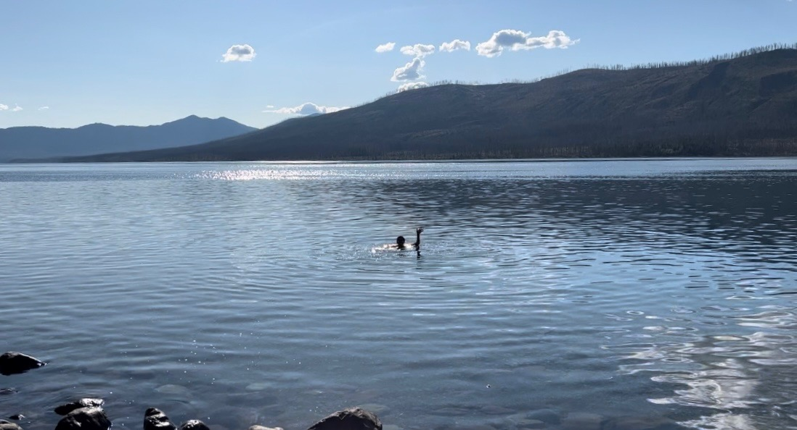

A trip into the backcountry of Glacier National Park (glamping edition). We started at Sperry Chalet, a backcountry hut with beds, home-cooked meals, countless mountain goats, and pit toilets.


Great mountain goat to human ratio.
Atleast 45% of my conversations this past month have been bear related.
The bear saga:
- A youtube viewing of the Night of the Grizzlies (to prepare for the trip, naturally) - Two people were mauled and killed by two different grizzly bears, a quarter mile apart from each other, on the same night in 1967.
- Several google searches on grizzly bear attacks to understand the actual risk. There have been 10 bear related fatalities in the history of the park since 1967.
- 5 different educational videos on how to use bear spray that all failed to reassure me.
The steps:
1. Remove the safety clip (the bear would have already reached me)
2. Aim slightly down and adjust for crosswind (takes atleast 30 seconds to confidently determine wind direction)
3. Begin spraying when the charging bear is 30-60 feet away (not sure average people have this frame of reference)
4. Spray at the charging bear so that the bear must pass through a cloud of spray (im scared, the safety clip likely still isn't off)
5. Keep spraying until the bear changes direction (ok)
6. If the bear continues to charge, spray into its face (...)
7. Leave the area promptly
Serious note: Thankfully, we did not see any grizzly bears on any hike. I have seen several articles about hikers who have been injured and killed in both Montana and Banff since coming home, which has been a very scary and sad reminder of how important it is to be as safe and alert as possible. Be safe (!!!)
The most terrifying animal sighting on this trip occurred on All Trails. We saw this posted for a trail in Canada the day before were planning on hiking it:

Thank you Cara W. from All Trails for satisfying my grizzly bear viewing curiosity with this photo.
- Empire of Pain by Patrick Radden Keefe : 5/5. A book about the Sacklar family, their pharmaceutical monopoly, and their role in the opioid crisis. This book will make you lose a little more faith in the medical system, goverment pharmaceutical regulators, and possibly humanity.
...
An easy and extremely informative non-fiction read!
- Harry Potter and the Chamber of Secrets: I am a new Harry Potter fan and have been watching the movies in a completely nonsensical order. The final movie for me ended up being 'The Chamber of Secrets.' After rejecting podcast after podcast, I watched this in the car while Jason drove and pieced together the scenes solely based on audio. By far, the best Harry Potter film.
No NYT word games will prepare you for this puzzle decoding:

TOM MARVOLO RIDDLE ~ I AM VOLDEMORT
- Crochet at camp: A middle aged woman at a Lake Louise campsite bathroom (my target audience) saw my homemade hat and told me she is excited that young people are crocheting again.

Took a visit to Montana's famous Mongolian food joint - Hu Hut, and got food poisoning on day 1 of the trip. The ringing of a mini gong and the sound of two middle-aged grill chefs yelling "Huuuuuuu Hut" every time someone left a tip still haunts me.
Last Best Pizza in West Glacier - Endless mountain peaks, big sky above, and the "Open" flag of Last Best Pizza waving in the distance - this is the best of Montana. This place had great food, a very nice staff, and vegan cheese.

This is serious.
Some junior ranger facts for you:- Glacier National Park had about 150 active glaciers when it was founded in 1910, it now has 25.
- Part of the Blackfeet Reservation was sold to the Federal government in 1895 and then became part of Glacier National Park but many of the terms of the sale are disputed by both sides
- Drowning (not grizzly bears) are the number one cause of death in Glacier National Park.

A wonderful cafe/bookstore in Golden, British Columbia which provided us reprieve from our camping stint in Glacier National Park. Investigating the domain of Bacchus's godly expertise led us to the word 'bacchanal' (new vocab word for me).
Bacchus - noun. (in ancient Greece and Rome) a god of wine and giver of ecstasy, identified with Dionysus
bacchanal - noun. an occasion of wild and drunken revelry